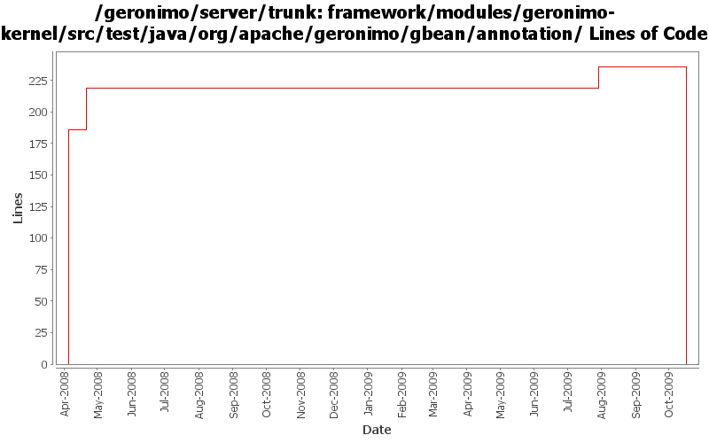

[root]/framework/modules/geronimo-kernel/src/test/java/org/apache/geronimo/gbean/annotation

| Author | Changes | Lines of Code | Lines per Change |
|---|---|---|---|
| Totals | 5 (100.0%) | 475 (100.0%) | 95.0 |
| djencks | 3 (60.0%) | 256 (53.9%) | 85.3 |
| gdamour | 2 (40.0%) | 219 (46.1%) | 109.5 |
GERONIMO-4916 step 2 move sandbox osgi framework into trunk
236 lines of code changed in 1 file:
GERONIMO-4916 step 1 remove old framwork
0 lines of code changed in 1 file:
GERONIMO-3003 Encrypt poassoreds and morked attributes in serialized gbeans and config.xml. Modified from patch by Jack Cai, many thanks.
20 lines of code changed in 1 file:
GBean name property is now optional. This way @GBean can be used either to configure name or j2eeType or both.
33 lines of code changed in 1 file:
*** Definition of annotations streamlining the definition of GBeanInfos.
* @GBean: optional annotation defining the name and j2eeType of a GBean.
If this annotation is not specified, then the default name is assumed to be
the class (simple) name and the default j2eeType is GBean.
* @Priority: optionalannotation defining the priority of a GBean.
* @ParamSpecial: annotation defining a GBean special attribute to be
injected.
* @ParamAttribute: annotation defining the GBean attribute to be injected.
* @ParamReference: annotation defining the GBean reference to be injected.
* @Persistent: annotation for setter methods turning the corresponding GBean
attributes into persistent attributes.
* @Reference: annotation for setter methods turning the corresponding GBean
attribute into a GBean reference.
Note that at most one constructor must be annotated with @ParamSpecial,
@ParamAttribute or @ParamReference.
*** Add a GBeanInfo factory strategy, GBeanInfoFactory, which allows us to
plug-in an annotation based GBeanInfo factory implementation.
*** Use annotation based GBeanInfo declaration for clustering related GBeans.
*** Use xbean-reflect to build GBean instances.
This fixes GERONIMO-3952 - Definition of GBeanInfo via annotations
186 lines of code changed in 1 file: